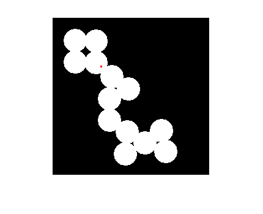
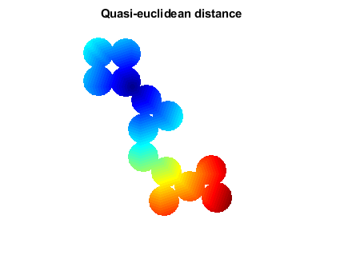
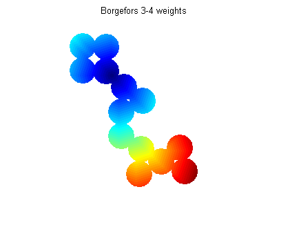

Contents
function demoImChamferDistance(varargin)
Read image a create marker
img = imread('circles.png');
marker = false(size(img));
marker(80, 80) = 1;
imshow(imOverlay(img, imdilate(marker, ones(3, 3))));

compute using quasi-enclidean weights
dist = imChamferDistance(img, marker);
rgb = double2rgb(dist, jet, [], [1 1 1]);
figure;
imshow(rgb);
title('Quasi-euclidean distance');

compute using integer weights, giving integer results
dist34 = imChamferDistance(img, marker, int16([3 4]));
dist34d = double(dist34);
dist34d = dist34d / 3;
dist34d(~img) = inf;
bounds = [0 210];
rgb34 = double2rgb(dist34d, jet, bounds, [1 1 1]);
figure;
imshow(rgb34);
title('Borgefors 3-4 weights');
